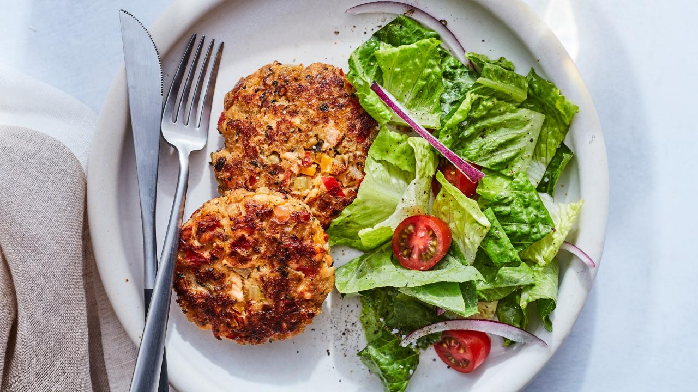

Salmon Cakes

- 1/2 pound fresh salmon
- Good olive oil
- Kosher salt and freshly ground black pepper
- 4 tablespoons unsalted butter
- 3/4 cup small-diced red onion (1 small onion)
- 1 1/2 cups small-diced celery (4 stalks)
- 1/2 cup small-diced red bell pepper (1 small pepper)
- 1/2 cup small-diced yellow bell pepper (1 small pepper)
- 1/4 cup minced fresh flat-leaf parsley
- 1 tablespoon capers, drained
- 1/4 teaspoon hot sauce (recommended: Tabasco)
- 1/2 teaspoon Worcestershire sauce
- 1 1/2 teaspoons crab boil seasoning (recommended: Old Bay)
- 3 slices stale bread, crusts removed
- 1/2 cup good mayonnaise
- 2 teaspoons Dijon mustard
- 2 extra-large eggs, lightly beaten
- Preheat the oven to 350 degrees F.
- Place the salmon on a sheet pan, skin side down. Brush with olive oil and sprinkle with salt and pepper. Roast for 15 to 20 minutes, until just cooked. Remove from the oven and cover tightly with aluminum foil. Allow to rest for 10 minutes and refrigerate until cold.
- Meanwhile, place 2 tablespoons of the butter, 2 tablespoons olive oil, the onion, celery, red and yellow bell peppers, parsley, capers, hot sauce, Worcestershire sauce, crab boil seasoning, 1/2 teaspoon salt, and 1/2 teaspoon pepper in a large saute pan over medium-low heat and cook until the vegetables are soft, approximately 15 to 20 minutes. Cool to room temperature.
- Break the bread slices in pieces and process the bread in a food processor fitted with a steel blade. You should have about 1 cup of bread crumbs. Place the bread crumbs on a sheet pan and toast in the oven for 5 minutes until lightly browned, tossing occasionally.
- Flake the chilled salmon into a large bowl. Add the bread crumbs, mayonnaise, mustard, and eggs. Add the vegetable mixture and mix well. Cover and chill in the refrigerator for 30 minutes. Shape into 10 (2 1/2 to 3-ounce) cakes.
- Heat the remaining 2 tablespoons butter and 2 tablespoons olive oil in a large saute pan over medium heat. In batches, add the salmon cakes and fry for 3 to 4 minutes on each side, until browned. Drain on paper towels; keep them warm in a preheated 250 degree F oven and serve hot.